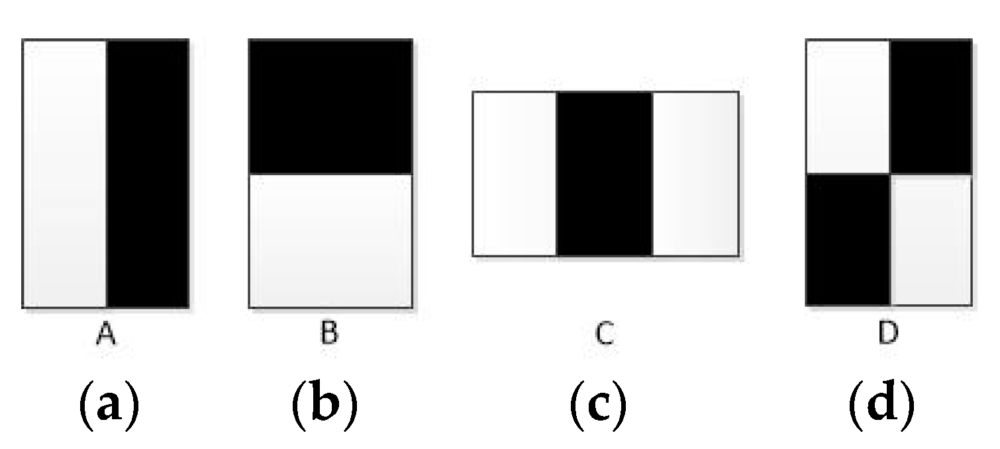
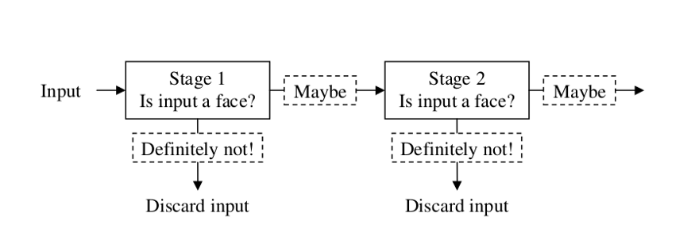
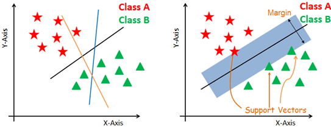

Methods
Face Detection Algorithm
Haar Cascading
Haar Cascading is the machine learning-based approach where lot of psitive and negative images are used to train the classifier.
Haar Cascading Algorithm has four stages.
- Haar Feature Selection
- Haar features are used to find certain charecteristics which are shared by the human faces.
- Mainly there are three types of Haar Features as shown in fig.
- Two Rectangle feature: This will calculate the feature value by taking the difference between sum of pixles inside two rectangular regions
- Three-rectangle feature: This will calculate the feature value by taking the sum of two outside rectangles pixel and subtract this with sum of pixel values of center rectangle.
- Four-rectangle feature: This will calculate the feature value by taking the difference between diagonal pairs of rectangles.
Fig. 2.1.1 Haar Features [1] - Creating Integral Images
- Now, the next step is to calculate the sum of every pixels above and left of the corresponding pixels. After doing this process the input image is converted to integral image
- Adaboost Training
- AdaBoost training algorithm is a ensembler classifier. Since this is a weak classifier it is made as a strong classifier by learning multiple times.
- The first two features selected by AdaBoost for the task of face detection are easily interpreted. First feature: the region of the eyes is often darker than the region of the nose and cheeks. Second feature: the eyes are darker than the bridge of the nose.
- Cascading Classifier
- Now the final step is to identify the portion of the image selected that contains the face or non face. To identify this we use a cascade classifier which consists of a number of stages with strong classifiers in each stage.Moreover, if the selected part of the input image is non face then it would be discard immediately and if the selected part is a face then it is passed to the next stage.
- The main idea is that if the portion of the input image passses through the more cascade stages then the probability that the selected part is a face will be higher.

Feature Extraction different techniques
Local Binary Pattern
Local Binary Pattern is a simple yet effective texture operator that labels the pixel of an image by thresholding the neighborhood of each pixel and considers the image as a binary number.
Steps for finding Features using LBP:
- Convert the whole image as a window of 3*3 pixel
- Now we set the threshold as central value of the matrix
- Then check for each neighbor value if it is equal or greater than the threshold value then set 1 else 0.
- Now we perform histogram calculation in which we multiply each cell binary value to 2n where n=0 to 7.
- Then sum of all histogram values which give feature vector of the entire image.

Gabor Filter
GF can effectively express the texture features. It captures the salient visual properties and has greatly successful results in face recognition.
Gabor filters with different frequencies and with orientations in different directions (similar to those of the human visual system) have been used to localize and extract edges from images.since edges are rich in high frequency components, whereas other regions of an image are relatively smooth in nature.
Histogram of Oriented Gradients
The histogram of oriented gradients (HOG) is a feature descriptor used in computer vision and image processing for the purpose of object detection. The technique counts occurrences of gradient orientation in localized portions of an image. This method is similar to that of edge orientation histograms, scale-invariant feature transform descriptors, and shape contexts, but differs in that it is computed on a dense grid of uniformly spaced cells and uses overlapping local contrast normalization for improved accuracy.
Steps for finding featuresusing HOG
- Gradients are computed in the ROI(region of interest) regions
- Binning done according to orientation
- Grouping of cells into large blocks and Normalization of each block
- Extraction of HOG features are stored in a feature vector
- Repeated for all frames in a given video and the final concatenated feature vector is obtained which will be given as input to the classifier
Discrete Cosine Transform
Discrete Cosine Transform (DCT) is a technique to convert data of the image into its elementary frequency components. DCT of an image consist of three frequency components low, medium and high frequency. DCTs usually works on fixed discrete sequences.
The two main issues that occurs on continuous cosine transform are we have to specify whether the function is even or odd and also we have to specify at what instant the function is even or odd.
Feature Classification Algorithm
Support Vector machine
The objective of the support vector machine algorithm is to find a hyperplane in N-dimensional space(N — the number of features) that distinctly classifies the data points. There are some extensions such as Soft Margin, Non-linear, and Multiclass SVM Classification that make SVM more robust and adaptable to a real-world problem.
Advantages:
- On experimental results, shows high performance..
- Data set dimensionality has a low dependency.
Disadvantages:
- In the case of categorical or missing value SVM needs preprocessing.
- Difficult interpretation of the resulting model.
k Nearest Neighbor
K-Nearest Neighbour (KNN) is an instance based learning in which the training data set is stored, so that a classification for a new unclassified record may be found simply by comparing it to the most similar records in the training set. The training examples are vectors in a multidimensional feature space, each with a class label. The training phase of the algorithm consists only of storing the feature vectors and class labels of the training samples. In the classification phase, k is a user-defined constant, and an unlabeled vector (a query or test point) is classified by assigning the label which is most frequent among the k training samples nearest to that query point.
Advantages:
- The cost of the learning process is zero
- No assumptions about the characteristics of the concepts to learn have to be done
- Complex concepts can be learned by local approximation using simple procedures
Disadvantages:
- The model cannot be interpreted.
- It is computationally expensive to find the k nearest neighbors when the dataset is very large.
- Performance depends on the number of dimensions that we have.
Random Forest
Random Forest Classifiers are entity-based training classifiers for classification by constructing a multi-attitude of decision trees at learning and output the label. At the inputting phase, it produces multi-altitude decision trees and multiple decision trees are produced at the outputting phase. By randomly selecting trees the correlation can be reduced thereby prediction power and accuracy increase.[3]
Advantages:
- It is simple to explain and grasp and it does not need any parameters.
- It eliminates the need for pruning the trees by entering it easily if any parameter exists.
- They are very fast and scalable.
- It automatically generates symbols in a class.
Disadvantages:
- They simply overfit its class.